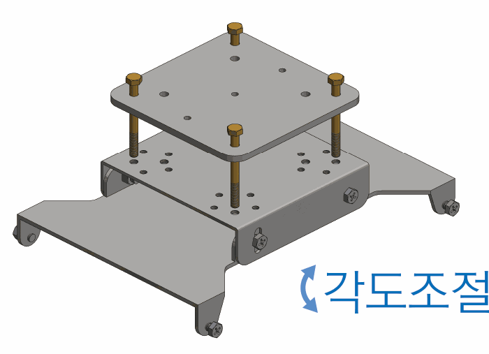
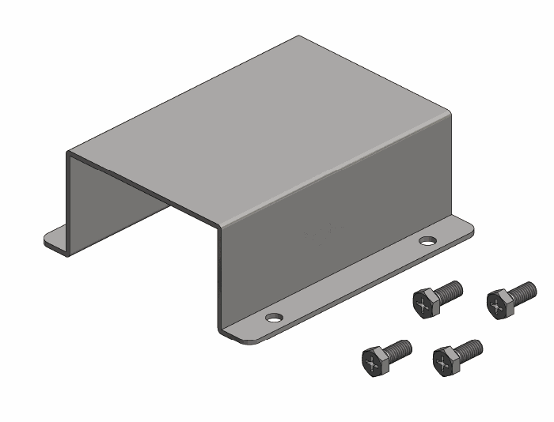
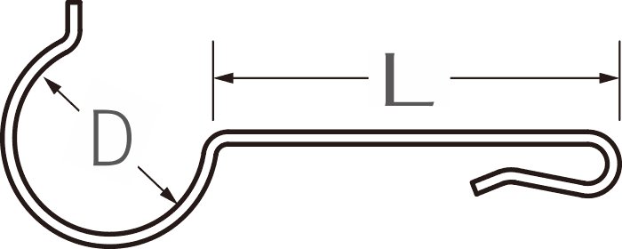

각도조절 고정 브래킷


시설 구조물에 본체를 고정하고 팬의 송풍 방향에 맞춰 설치 각도를 조절합니다. 파이프 홀더는 현장 파이프 규격에 맞춰 선택합니다.
400A는 각도조절 브래킷을 사용하고, 320S·300S·270S는 시설 규격에 맞는 고정용 걸고리를 선택합니다.


시설 구조물에 본체를 고정하고 팬의 송풍 방향에 맞춰 설치 각도를 조절합니다. 파이프 홀더는 현장 파이프 규격에 맞춰 선택합니다.


모델과 설치 파이프 규격에 맞는 걸고리를 선택합니다. 홈페이지 기준 걸고리 지름은 Ø25·Ø32·Ø48로 구분됩니다.
주문 확인 고정용 걸고리와 파이프 홀더는 설치 구조와 파이프 규격을 확인한 뒤 선택해야 합니다.